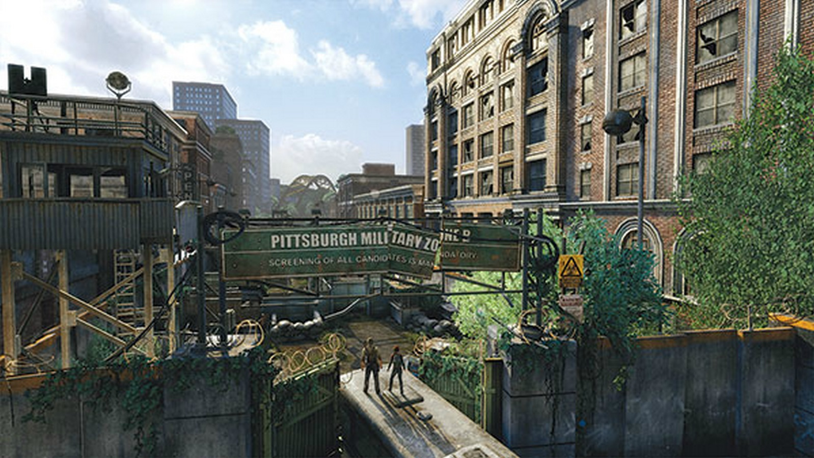

The world after the fall, a place where humanity is in decline, where a new, mixed society of mutants, androids, and humans takes its first steps to adapt to a new world, and where feral apex predators now reside on the top of the foodchain.
Expect a hostile world. Dangerous mutated beasts, wierd and destructive magic, and insane AI's controlling android bodies are commonplace in the post-fall world.
Food and water is plenty, but usually contaminated. Drinking acid or irradiated rainwater, or not knowing which creatures to hunt and eat will eventually lead to mutations.
Settlements, oases of civilized folk are tiny but numerous. A city in the post-fall world is a settlement at 1000 or more individuals, and these are few and far between. Any settlement would have some valueable resource nearby, and for more prosperous cities that resource is clean drinking water, which is used as universal currency.
Our adventurers, the player characters (PC's) will in this game explore a wierd world, filled with danger, but also curiosities and opportunity. They will struggle to keep themselves well fed and healthy, all the while attempting to make a name and fortune for themselves by working for those who have more.
Exploration yields resources. There is always some trinkets, weapons, or foodstuffs yet not looted in the ruins of the old world. This is no way to make a stable living though, and taking on freelancer work is more lucrative in exchange for a heightened danger and risk. The players must choose how to go about their livelyhood, and eke out their own path the way they see fit.
The adventurers are exceptional, as they have the will, and wit to stride out and make more of their lives than the regular denizen of the post-fall world. This will put them in harms way, but also inspires others to follow them. Settlements will more than often hold the possibility to recruit help, either by paying a wage, or by persuasion.
After exploring, some places found will cause the adventurers to want to return there. It could be a safehouse like a bunker, or maybe a warehouse with too many wares to carry, or maybe they stumbled across a source of clean water. At some point, establishing a permanent base would be in any successful explorers best interests. While this would allow for greater influence and stability, resources will also attract those who want them, either by trade, or force.
When playing the game, your character and fellow PC's will try to persue personal goals, higher ideals, or lofty ambitions, or even solve problems for local employers, when they have the time and resources to do so. Being a mercenary in this unexplored, and dangerous world requires time, planning, and ample provisions. To invest in a venture which does not give immediate reward usually requires even more resources, and a few jobs inbetween are required before attempting such an enterprise.
The intended way to play Massive apocalypse is summarized below;
Starting out, the surrounding areas will be unexplored, and your company will be exploring a foreign domain.